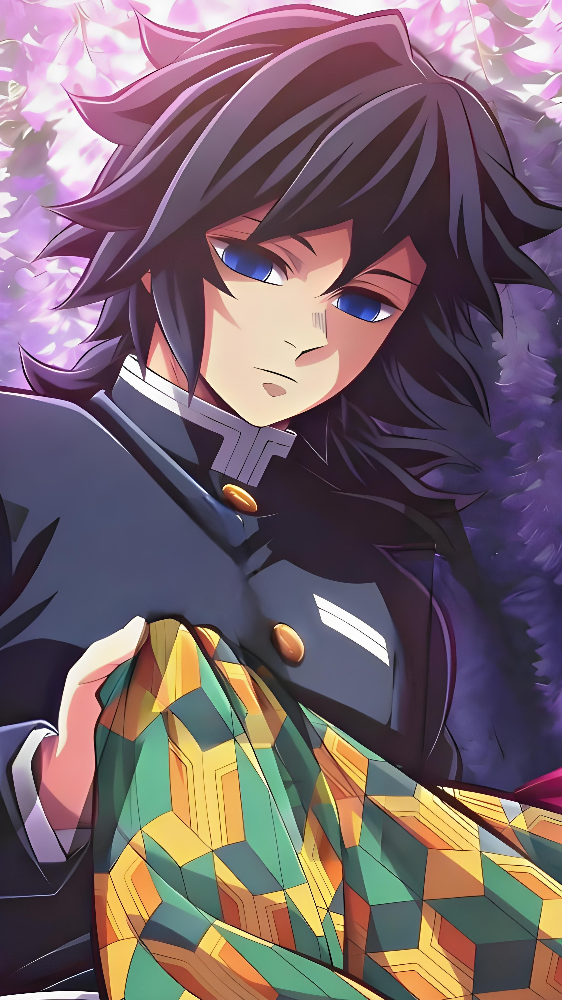

- Historia
Giyu creció enfrentando traumas y la pérdida de seres queridos,
lo que generó en él un carácter estoico y la sensación de que no merecía
su posición como Pilar debido al sacrificio de su amigo Sabito durante la
Selección Final. Su personalidad lo hace trabajar solo, aunque muestra compasión
hacia seres como Nezuko Kamado, protegiéndola pese a ser un demonio.
Como Pilar del Agua, domina la Técnica de Respiración Acuática, utilizando
cortes precisos y veloces, y ha enfrentado demonios de alto rango como Rui y
Akaza. También activa la Marca del Cazador y utiliza la Nichirin Roja, aumentando
su poder y eficacia en combate.
A lo largo de la serie, Giyu evoluciona, superando su aislamiento y culpa, fortaleciendo
sus lazos con otros cazadores y reconociendo la importancia de proteger a los
inocentes. Su apariencia se caracteriza por cabello negro recogido, ojos azul safiro
y un haori de doble patrón, recordando a su hermana y a su amigo Sabito.
En resumen, Giyu es un personaje complejo que combina trauma, sentido del
deber y posibilidad de redención, consolidándose como uno de los Pilares más
respetados y admirados de Demon Slayer.


- Información
Nombre completo: 冨岡 義勇 (Tomioka Giyū)
Edad: 19 años al inicio, 21 años al final
Cumpleaños: 8 de febrero
Altura: 176 cm
Peso: 69 kg
Cabello: Negro azabache
Ojos: Azul lapislázuli
Afiliación: Cuerpo de Exterminio de Demonios
Título: Pilar del Agua (Water Hashira)
Estilo de combate: Respiración del Agua (Water Breathing)
- Ficha técnica
- Registro de fans
- Galería